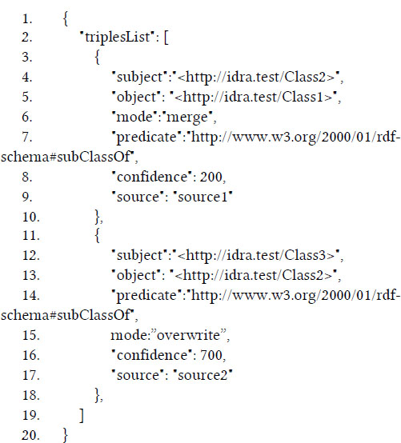

1 INTRODUCTION
Ontology learning is the branch of ontology engineering that addresses the task of the automatic construction of an ontology by extracting information, possibly, from the web. Recently, hand in hand with the need of giving meaning to the big amount of data accessible on the web, the ontology learning task has become more and more essential. Even though progresses have been made, there are still some research problems that should be addressed to increase the quality of the information extracted and included in the ontology.
One of the most important is the management of uncertain data. As highlighted by [1] we could consider two different kind of uncertainty: objective and subjective . An objective uncertain data is something that is inherently uncertain. As an example, we could mention the daily weather forecast where the chance of rain is expressed with a given probability. The subjective uncertain data represents facts that are inherently true or false, but their value is hard to be defined because of data noise. Since the first phase of data extraction is usually automatic, the initial misinterpretation of data can be caused by the intrinsic ambiguity that affects the human language. There are several other factors that could impact on the quality of the extracted data, like the presence of wrong information in some sources of the web (open world assumption), or also poor information that could prevent the machine inferring the right concepts due to lack of context: it could be difficult for a machine to distinguish between the two USA presidents George Bush and George W. Bush, often called simply Bush in several online documents.
Besides the definitions given above there is a substantial difference between the two scenarios (subjective and objective uncertainty): in the first case there is no truth to be identified, so that the quality of the data inferred can rarely be improved even with the human support. The only way of reasoning to infer new information over those data is using a statistical or a fuzzy approach as in [2] and [3]. In the second case the truth about the fact exists but is hidden to the agent extracting data; that's why humans can play a relevant role on supporting the automatic extraction process. Furthermore, even though a few researchers [4] [5] propose the use of the same statistical reasoning approach to infer new information both from subjective and objective uncertain data, there are some negative aspects. Statistical reasoning applied to ontology requires the reification of triples to assign to them a confidence level or any other attribute that is useful to describe its uncertainty. This could cause a big overhead on ontologies that, in some cases, are already big. The second negative aspect is that the statistical approach and the algorithms that implement it are often complex and not scalable. What about a mixed scenario where the ontology contains both certain and uncertain statements or even the most part of the statement are certain? This is not just a theoretical scenario, but it could happen during an ontology learning process where there is an initial core of certain statements already included in the resulting ontology, or some uncertain statements are referring to common external ontologies.
The solution we propose in the next sections to manage uncertain statements is the adoption of an approach that is closer to the human cognition processes and it is based on “ what if ” reasoning also known as conceptual simulation (see section 3). In the system described in section 4 the information related to the uncertainty is pushed outside the ontology and it is directly managed by the infrastructure (the triple store). This means that from a first-order logic reasoner's point of view, both certain and uncertain statements have the same value. The confidence level value of each triple is not static, but it is continuously updated by the learning ontology process as soon as the system detect the same1 triple coming from new data. The user is provided with a UI that allows him to make SPARQL query pre-selecting the triples to be involved in the query.
2 RELATED WORK
A lot of different approaches have been developed to manage uncertain statements in ontologies either for the handling of the uncertainty (that means how to store it and include it in ontology standards) or for the reasoning over uncertain axioms to produce new knowledge from them. Even though ten years passed since the report of the URW3-XG W3C Group (involved in the definition of the Uncertainty Reasoning) was published, no standard de facto prevailed on the others and all the approaches initially delineated by the group are still present. There are two main approaches that we could identify in literature about the storing of uncertainty. The first one prefers to include this information in the ontology. An example of this approach can be found in [3] where the uncertainty of a resource is expressed with a fuzzy index that can be expressed using specific annotations. Those annotation can be recognized by fuzzy reasoners [6] while they are ignored by first order logic ones. Even though this method should ensure that the ontology is still compliant with standard reasoners, these ones would consider the fuzzy axioms as true, carrying probably to inconsistent results.
The second approach considers the confidence level of an ontology statement as a metadata of the ontology, so that it is not included in the final ontology. An example of the second approach is [1] where the confidence level assigned to each axiom is stored in a temporary model called LOM (Learned Ontology Model). The LOM is a model that can define the ontology learning process. The idea behind this approach is to progressively move axioms from the LOM to the new ontology verifying time by time its consistency by an evaluation function. The process proposed is automatic and does not provides for human support. A key aspect for the managing of uncertainty, as underlined by the report of the URW3-XG Group, is the reasoning. We have already mentioned the fuzzy approach, that allows for representing and processing degrees of truth about vague (or imprecise) pieces of information, but also the probabilistic approach has many solutions and methods like Bayesian Networks and a lot of proposals of extensions of the DL language. Some interesting approaches that use deductive reasoning to resolve uncertainty in ontologies, have recently been presented [7].
Another key aspect of the approach we present in the next sections is the use of the human support to resolve uncertain statements. Involving humans in debugging ontology generated by automatic systems or by other humans is not novel. Nevertheless, the cost of using domain expert to fulfill this task is a limiting factor in most cases. To solve this issue some researchers proposed tools [8], methods [9] and even games [10] to encourage collaborative and less expensive strategies like crowdsourcing2 .
3 RESEARCH QUESTION AND HYPOTHESES
The previously described problem statement concerns the difficulty to combine uncertain knowledge with semantic web technologies that are mainly based on certain statements. This task is necessary during the automatic ontology learning process from heterogeneous sources as in the web. In the previous section we showed just a few of the approaches present in the literature as it is a continuously expanding research area. According to the addressed problem our main research question is: can the human factor simplify and improve the ontology learning process that is mostly based on the acquisition of subjective uncertain statements? The answer to this question is surely positive: there are several examples [11] that use the human feedback to improve the quality of an automatic acquired knowledge. But is the presentation to the user of a set of facts and statements always an effective method? What if we are collecting subjective uncertain statements, that are inherently true or false, but whose value is not completely clear to the human operator? For instance, we could consider an ontology learning system that is made to enrich an initial ontology containing some information about a set of people. It could be used to crawl information from social networks and this operation could lead it to find out a bunch of potential profiles belonging to each person contained in the starting ontology. The human operator could be requested to validate all the statements produced selecting the ones related to the right profile. This could be a very hard task that could become very complex if the number of statement produced from each profile is high. Then a sub question of the previous one is: which tools we should provide the human operator with in order to make the task easier even when he hasn't got a wide knowledge of the domain explored?
Our hypothesis is that we could reach this goal providing the human operator with a “ what if ” reasoning tool that he could apply on the growing ontology. According to [12] and [13] the “ what if ” reasoning, also called conceptual simulation or interrogative model , is one of the most used reasoning methods in scientific discovery and may be useful when precise quantitative information is not available, as well as when a scientist is attempting to develop a general, or high-level, understanding of a system. Like other forms of mental model-based qualitative reasoning, “ what if ” reasoning allows one to reason with partial knowledge (whether incomplete or imprecise) and hence to accommodate the ambiguity inherent in situations of uncertainty [14]. “ What if ” reasoning also allows the construction of multiple alternatives, which may be useful in generating predictions or explanations when scientists lack principled knowledge, that can allow them to proceed in their reasoning with some measure of certainty.
In [13] " what if " reasoning is described as an interrogative game. This kind of game is defined by some statements, that are the premises (what we assume to be true) and the conclusions (what we want to verify). The players of the game are the inquirer and the oracle. The inquirer has to verify the conclusions starting from the premises and querying the oracle, while the oracle returns always the truth according to its knowledge. The inquirer can make two kind of moves: interrogative moves and logical inference moves.
We transposed this model into the ontology learning process using the uncertain statements collected as the premises. The conclusions are the set of statements that should be true according to the premises. Their consistency has to be verified in the view of the previous knowledge. The inquirer is the user while the oracle is a customized triple store as described in the next section. The moves made by the user are represented by the SPARQL queries (interrogative moves), while the logical inference moves are represented by the reasoning steps made by the user that should let him verify the premises. In section 5 we will show how this model is implemented in our system.
4 OUR APPROACH
The tool LAM (Learned Axioms Manager) presented in this paper is part of a wider framework called IDRA (Inductive Deductive Reasoning Architecture) [15] (Figure 1).

It was realized to improve the ontology learning process using both inductive and deductive reasoning techniques.
IDRA
IDRA is a general architecture that can be instantiated to create ontology learning systems focused on a specific domain. For this reason, the modules composing the architecture can be divided in domain dependent components and domain independent components. The first ones mainly consist of modules, leveraging the UIMA [16] framework to extract information from heterogeneous sources, called Analysis Engines. Each engine is provided with the algorithms necessary to extract information from a specific source so that it can be an NLP Analysis Engine if the source consists of natural language documents, or a specific parser if the information to be extracted are in tabular form or they consist of multimedia documents. The output of the Analysis Engines is a set of annotations related to the source documents, all adopting the CAS3 format. This step lets IDRA unify the input coming from different sources. In the next step the annotations are elaborated by another IDRA's module called Statements Generator (SG) that leverages CODA [17] library to extract RDF triples from the annotations. The triples are injected inside a customized triple store that we will describe in detail in the next section and that provide the user with the “what if” reasoning features.
The uncertainty of the statements extracted is managed starting from the analysis engines. Each annotation is provided with a confidence level (a real number in the interval [0,1]) that is transferred by the SG to the corresponding triples. The confidence level can be conditional on several factors depending on the implementation of the analysis engine. It could inherently relate to the algorithm used to analyze the documents or depends on the reliability assigned to the source by the user. Since IDRA has been designed to work both on a limited document corpus or on a continuously changing environment, the subsystem composed by the UIMA AEs and the SG can work both with a single extraction phase or can periodically search for new information from a set of selected sources (RSS feeds). The destination of the triples coming from the SG is the Learned Axioms Manager (LAM). The confidence level of each triple stored in LAM is not static, but it is constantly updated as soon as an already stored triple recurs again in the extraction phase.
The Learned Axioms Manager
The LAM has a principal role in IDRA's architecture. As we anticipated above it is charged with storing the triples coming from the SG. It continuously updates the confidence level of each triple modulating it according to the incoming value and the previous occurrences. The modulation is made computing the average of all the occurrences of the same RDF statement. Referring to the approach adopted by [1] the main scope of the LAM is the maintenance of the LOM (Learned Ontology Model). This means that the axioms stored by the LAM represents not a single ontology but all the possible consistent ontologies that could be extracted from the LOM.
In our approach the transformation of the LOM to a consistent ontology is not an automatic process leveraging an evaluation function but is a collaborative process between LAM and the human operator. The main novelty of the LAM if compared with existing solutions is the chance to execute SPARQL queries on slices of the LOM according to a filter defined by the user. We called this functionality “ what if ” reasoning validation because it lets the user make assumptions on the axioms contained in the LOM and then verify the evolution of the result of the SPARQL queries executed on that assumptions. As we show in section 5 the user applies different strategies to validate the learned ontology according to his knowledge of the semantic domain even if that is partial.
The LAM is composed by a backend side that is implemented according to the API REST model and a User Interface. The first provides a set of endpoints (Table 1) that can be accessed both by other software module or by a UI. In IDRA's architecture for example the REST interface allows the SG to send the extracted triple directly to the LAM, continuously feeding it without the need of any operation from the user. The user interface provides both the active forms implementing the backend endpoints but also a set of charts describing the actual consistency condition of the learned ontology: how many uncertain statements are presents in the LOM and how they are statistically distributed.
| EndPoint | Scope | Use |
|---|---|---|
| saveTriples | Save a set of triples | This endpoint requires a POST request sending a JSON containing the triples array as the body of the request. No additional parameter is required. |
| importData | Load an RDF/OWL ontology | This endpoint requires a POST request containing the RDF/OWL file in the body and the ONTOLOGY_URL additional parameter that is used to send the IRI of the loaded ontology. Through a second Boolean parameter called ONTOLOGY_EVOLUTION the user can choose if the confidence level of the statements belonging to the ontology is fixed. |
| executeSparqlQuery | Execution of “what if” SPARQL queries | This endpoint requires a GET request. Two parameters have to be sent togheter with the request: the sparql query and the odata filter |
In the following sub-sections, we describe the back end and the front-end of the LAM in detail.
LAM Backend: Endpoints and Architecture
The first level of the LAM Architecture exposes a set of endpoints and a standard OData interface, that can be used to query the metadata of the learned ontology (like confidence level and source of axioms).
The saveTriples endpoint is used by the SG module to send set of triples to the LAM. It requires a POST request that includes in its body the JSON containing the array of triples to be inserted in the LAM. An example of correct JSON to be used with the saveTriples endpoint could be the following:

Subject, predicate and object (lines: 4,5,6,12,13,14) must be represented following the standard OWL2 syntax4 for IRI Resources, Literals and Blank Nodes (aka anonymous individuals in OWL2). The mode (lines 6 and 15) attribute allows to use the endpoint either for the modulation of a triple or its validation. The confidence (lines 8 and 16) level of the triples tagged with the “overwrite” mode, if the triples are already present in the LAM, will be replaced with the new value. The confidence level of the triples tagged with “merge” mode will be modulated by the computation of the average of all the confidence levels assigned to a specific triple.
The confidence level is expressed with an integer included in the interval [0, 1000]. The source (lines 9 and 17) attribute saves the provenance of the triple. It can be also used together with the confidence level to filter the triples in the “ what if ” SPARQL querying.
The scope of the importData endpoint is the uploading of an entire ontology in the LAM. The supported format is RDF/OWL. This function is useful when the ontology learning process does not create an ontology from scratch but enriches an already existing one. In this case the confidence level of all the triples included in the ontology is set to the maximum value. Moreover, depending on the mode parameter called ONTOLOGY_EVOLUTION is possible to consider the initial statements as static: their confidence level cannot be changed by incoming equals triples, or non-static if the statements of the initial ontology can be affected by incoming ones.
The executeSparqlQuery endpoint allows the execution of the SPARQL queries. The two parameters that must be provided to the endpoint are the SPARQL query, of course, and a filter according to the odata standard5 . The filter can be applied on anyone of the entity types and attributes included in the data model. Using the filter, a set of statement can be selected to be part of the ontology to be queried so they will be assumed to be true independently on their current confidence level. As we will see in the next sections the user can filter statements on the confidence level assuming as true the statement over a certain confidence threshold, but he could also assume as true all the statements coming from a certain source, or he could permit the execution of the query to the taxonomic part of the ontology including only the statements that have an rdfs:subClassOf predicate and so on and so forth.
The second level includes the Statements Modulator (SM), that is the module that manages the computation of the confidence level for recurrent triples and the SPARQL query parser based on the framework RDF4J. It handles the execution of the SPARQL queries. The SPARQL query parser includes also some deductive reasoning functionality.
The underlying technology of the LAM that is located in the last level of Figure 2 is a high speed in memory graph DB that implements the data model described in Figure 3.
The principal entity of the model is the triple that includes the attributes required to collect some metadata that are important for the managing of uncertain statements. We want to highlight three of them that are the confidence level, the number of occurrences and the source because are the most important ones for the validation of the triple made by the human operator. The first one stores the confidence level of the triple calculated by the SM. If a single instance of a triple is extracted from the analysed documents the SM will assign to the triple the same confidence level coming from the SG, otherwise it will calculate the average of the confidence level increasing the number of occurrences. This value is also an important aspect to be evaluated by the user during the validation because it shows how much the fact described by the triple occurs in the corpus. The last parameter is the source of the triple that means the uri of the document the triple has been extracted from. This is important during the setting up of the “what if” SPARQL queries because could let the user assume as true all the triples coming from a certain source that is considered more reliable than others.
The entity type Triple has also three navigation properties6 that connects it with the three entity types: Subject, Predicate, Object. The purpose of these entity types is just to properly connect each resource, literal or bnode to a triple and avoiding duplicated resources in the repository. The last entity types of the model are IRI_RESOURCES, that includes all the resources provided with an IRI, LITERALS, and BNODES.
The choice of an in-memory graph db for the implementation of the triple store is justified by the flexibility that we want the LAM to have in the representation of the ontology. The main advantage of a graph db in comparison with a traditional relational DB is the structure-free environment that can let rearrange the entities according to the user needs. Starting from the basic data model shown in Figure 3 it is possible to extend runtime the data model rearranging it according to user's needs. For instance, if the ontology processed is strongly taxonomic could be useful to extend the data model rearranging resources on the rdfs:subClassOf predicate. This could simplify the selection of subtrees of the ontology in the “what if” SPARQL queries.
User Interface
The API REST architecture gives the LAM a lot of flexibility but, on the other side, to make the human involvement easier, we developed a UI that uses all the endpoints and give the user also some additional information leveraging the OData interface supported by the underlying technology. Through the UI the user can:
- Upload the domain ontology to be enriched
- Add single or groups of uncertain statements7
- make “ what if ” SPARQL queries (Figure 4) Figure 4: LAM interface to make what if SPARQL queries.
- approve/reject statements (Figure 5) Figure 5: LAM interface to validate triples.
Besides this feature the UI provides also some charts that display the distribution of uncertainty inside the growing ontology and the quota of certain and uncertain statements included in a SPARQL query according to the filter applied.
USE CASE
In this section we present a simple example showing how the user can benefit from the “ what if ” SPARQL querying. In Figure 6 we present a graph representing a piece of an ontology that could be the result of an ontology learning process. The nodes are the Subjects/Object of the rdf statements while the edges represent the predicates. The green nodes are the ones that are already part of the initial ontology while the blue ones are acquired by the learning process. The nodes Bush1, Bush2 and so on represent a set of entities that have been considered similar to GeorgeWBush so that the SG created a set of sameAs statements between GeorgeWBush and those entities. Since a real graph coming from a real ontology learning process could be very complex we should give the user the tools to identify and validate the right statements or to reject the wrong ones, without the need of knowing the structure and the content of the graph but just by the execution of SPARQL queries. Let's assume that the user has a partial knowledge of GeorgeWBush. He does know that he was President of USA but not that he was Governor of Texas. He knows that he started the Second Gulf War and he did not participate in the first, but he does not know that he was son of George Bush. According to what he knows about George W Bush and to start the validation of the statements the user wants to ask: “Which are the jobs that George W.Bush had during his life?”. At the beginning the user could try to execute a query considering the entire ontology. This is the first “ what if ” query: “What is the result if I consider the whole ontology?”. Using IDRA UI he should consider the whole confidence level interval, that means without filtering any statement, and he should set the following SPARQL query: SELECT ?job WHERE { GeorgeWBush hadJob ?job }. This query will return, according to all the statements collected, that GWB had the following jobs:
- PresidentOfUSA
- GovernorOfTexas
- GovernorOfFlorida
- FootbalPlayer
By the analysis of the result the user can infer starting from his partial knowledge that there could be inconsistencies inside the growing ontology because the query returned some jobs that could not belong to George W Bush. The deductive reasoner will also detect another inconsistency: GeorgeWBush cannot be at the same time Bush1 and Bush2 or Bush3 and Bush2 because there is an isSonOf relationship between those elements that is not reflexive. To improve the result, the user can make another “ what if ” query using the same SPARQL query but reducing the interval to the most confident statements [0.8, 1.0] by the application of a filter on the confidence level. The result will now include only the first two items of the previous answer: PresidentOfUSA and GovernorOfTexas. Moreover, the inconsistencies caused by the relationship isSonOf should be now limited to the statement that link Bush1 to Bush2, that are the two statements:
- <GeorgeWBush> <sameAs> <Bush1>
- <GeorgeWBush> <sameAs> <Bush2>
Now the user can assume alternatively that one of the statements is true and the other false and vice versa to verify which is the assumption that produces the best result according to its knowledge. In this case assuming the first statement as true and the second as false GeorgeWBush participated in the Second Gulf War, while in the second case he would not.
The presented example, that can be easily executed using IDRA, shows how the validation process of the statements produced by an ontology learning process could be improved providing the user with a tool that lets him make assumptions on the statements acquired and verify the result according to his knowledge. Furthermore, the user does not need to have a full knowledge of the domain, but a partial knowledge could be enough to identify inconsistency clues.
6 CONCLUSION AND FUTURE WORK
In this paper we introduced a novel method to manage uncertainty in the ontology learning process. The approach we adopted is characterized by the assignment of a confidence level to each axiom of the ontology. The confidence level is inherently part of the algorithms used in the ontology learning process. As in [1] it is not included inside the ontology, but it is maintained as a metadata. Part of the uncertainty managing has been transferred to the infrastructure (the triple store) where all the statements extracted are stored and continuously updated by the learning process. The validation of the learned ontology is made through the interaction between the human operator and the system using “ what if ” queries that let the user verify the effect of his assumptions on uncertain statements. The output of inconsistencies in the result can guide the user to the identification of wrong statements without the need to know the entire ontology extracted and also in the case of a not complete knowledge of the domain. The user acceptance or rejection of the statements affects their confidence level and then the result of subsequent queries.
The future work on the system will be focused on the formalization of the strategies of the “ what if ” querying in order to rapidly detect inconsistencies. This should help to reduce as much as possible the human support letting the system automatically evaluate the result of the queries with the domain ontology provided by the user.